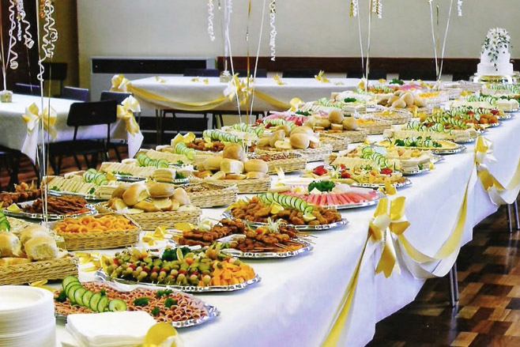

Leitura Orante
Leituras do Dia
Quinta-feira da 20ª Semana do Tempo Comum
São Bernardo, Abade e Doutor
(Branco - ofício da memória)
20 de agosto de 2020
Leitura Orante do Evangelho
Ouça o áudio da oração e reflexão do padre Francisco das Chagas


Oração do dia
Ó Deus, que fizestes do abade são Bernardo, inflamado de zelo por vossa casa, uma luz que brilha e ilumina a
Igreja, dai-nos, por sua intercessão, o mesmo fervor para caminharmos sempre como filhos da luz. Por Nosso
Senhor Jesus Cristo, Vosso Filho, na unidade do Espírito Santo.
Leitura: Ezequiel 36,23-28
Assim fala o Senhor: 23“Vou mostrar a santidade do meu grande nome, que profanastes no meio das nações. As nações saberão que eu sou o Senhor – oráculo do Senhor Deus – quando eu manifestar minha santidade à vista delas por meio de vós. 24Eu vos tirarei do meio das nações, vos reunirei de todos os países e vos conduzirei para a vossa terra. 25Derramarei sobre vós uma água pura, e sereis purificados. Eu vos purificarei de todas as impurezas e de todos os ídolos. 26Eu vos darei um coração novo e porei um espírito novo dentro de vós. Arrancarei do vosso corpo o coração de pedra e vos darei um coração de carne;27porei o meu espírito dentro de vós e farei com que sigais a minha lei e cuideis de observar os meus mandamentos. 28Habitareis no país que dei a vossos pais. Sereis o meu povo e eu serei o vosso Deus”. - Palavra do Senhor.
Salmo Responsorial: 22(23)
Eu hei de derramar sobre vós uma água pura,
e de vossas imundícies sereis purificados.
!
Criai em mim um coração que seja puro, dai-me de novo um espírito decidido. Ó Senhor, não me afasteis de vossa face nem retireis de vossa face nem retireis de mim o vosso Santo Espírito s.
Eu hei de derramar sobre vós uma água pura,
e de vossas imundícies sereis purificados. !
Dai-me de novo a alegria de ser salvo e confirmai-me com espírito generoso! Ensinarei vosso caminho aos pecadores, e para vós se voltarão os transviados.
Eu hei de derramar sobre vós uma água pura,
e de vossas imundícies sereis purificados. !
Pois não são de vosso agrado os sacrifícios, e, se oferto um holocausto, o rejeitais. Meu sacrifício é minha alma penitente, não desprezeis um coração arrependido!
Eu hei de derramar sobre vós uma água pura,e de vossas imundícies sereis purificados. !
Evangelho: Mateus 22, 1-14.
Naquele tempo, 1Jesus voltou a falar em parábolas aos sumos sacerdotes e aos anciãos do povo,
2dizendo: “O Reino dos céus é como a história do rei que preparou a festa de casamento do seu
filho. 3E mandou os seus empregados para chamar os convidados para a festa, mas estes não
quiseram vir. 4O rei mandou outros empregados, dizendo: ‘Dizei aos convidados: já preparei o
banquete, os bois e os animais cevados já foram abatidos e tudo está pronto. Vinde para a festa!’
5Mas os convidados não deram a menor atenção: um foi para o seu campo, outro para os seus
negócios, 6outros agarraram os empregados, bateram neles e os mataram. 7O rei ficou
indignado e mandou suas tropas, para matar aqueles assassinos e incendiar a cidade deles. 8Em
seguida, o rei disse aos empregados: ‘A festa de casamento está pronta, mas os convidados não foram dignos
dela. 9Portanto, ide até as encruzilhadas dos caminhos e convidai para a festa todos os que
encontrardes’. 10Então os empregados saíram pelos caminhos e reuniram todos os que encontraram,
maus e bons. E a sala da festa ficou cheia de convidados. 11Quando o rei entrou para ver os
convidados, observou ali um homem que não estava usando traje de festa 12e perguntou-lhe: ‘Amigo,
como entraste aqui sem o traje de festa?’ Mas o homem nada respondeu. 13Então o rei disse aos que
serviam: ‘Amarrai os pés e as mãos desse homem e jogai-o fora, na escuridão! Ali haverá choro e ranger de
dentes’. 14Porque muitos são chamados, e poucos são escolhidos”.
– Palavra da Salvação.
Leituras do mês
TAGS
missao Amazonia evengel covid-19 indigenas novica papa francisco
Destaques
Província Stella Matutina
Rua São Benedito, 2146 - Santo Amaro - São Paulo - SP |
Tel. (11) 5547-7222


Província Spiritus Divinae Sapientiae
Rua Arnaldo Janssen, 320 - Cara-Cara - Ponta Grossa - PR |
Tel. (42) 3326 4091